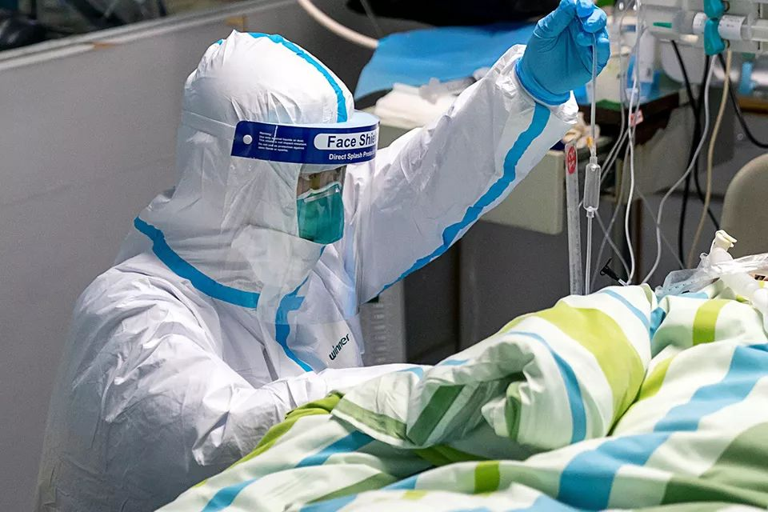

我的县城防疫笔记：200个口罩也不能让我安心
原文链接 备份链接 桐柏县中心医院 作者供图 作者李强 这次肺炎疫情爆发后，我在老家陆续出现了一些这场疫情中经常被提及的症状。 我的老家是河南省南阳市桐柏县，离武汉仅200多公里。2020年1月23日，农历猪年腊月二十九，我开始干咳、 …

*▲ *2020年1月24日，在武汉大学中南医院重症隔离病房，医护人员为病人治疗。 （新华社记者 熊琦/图）
全文共*3298*字，阅读大约需要*7*分钟。
有医生刚脱下工作服，巨大的压力让其瞬间变身“小女生”坐在房间里嚎啕大哭，对于此类采用情绪支持治疗，多一些陪伴和聆听，帮助他们宣泄情绪；有不知如何宣泄情绪的医生，表面上看一切正常，却因不能休息、无法轮换，出现急性“应激障碍”，严重失眠导致无法正常上班，对于此类医生，他们开出了抗焦虑药。
武汉市民以两种心理问题居多：一种是“疑病症”，即就医检查显示“没有异常”，但仍不能打消顾虑，常伴有焦虑；一种是“强迫性恐惧”，防疫物资一应俱全，但依然有一种难以抗拒的恐惧。武汉之外，普通公众看到疫情的现状后，因为共情和同理心，间接导致身心出现困扰，甚至精神崩溃，形成“替代性创伤”。
北京大学副教授、学生心理健康教育与咨询中心副主任徐凯文告诉南方周末记者，他即将参加中国心理学会组织召开的紧急会议，“会议就是应对这次疫情的，处理恐慌也是重要任务”。
*本文首发于南方周末 未经授权 不得转载*
文 | 南方周末记者 马肃平
责任编辑 | 曹海东
“你知道不被需要是怎样一种滋味吗？”农历鼠年前几天，湖北省心理咨询师协会会长、武汉大学中南医院神经内科主任医师肖劲松接到一个电话，来电者是一位医生，刚被确诊感染了新型冠状病毒肺炎。
当时，中南医院床位极度紧张，连被感染的医生都收不进，只能自我隔离在朋友提供的一间无人居住的房子里，空调和暖气都没有。家人的电话接踵而至，指责这位医生把病毒带回了家，让家人也面临被感染的风险。
满腹委屈、无助、内疚……种种情绪涌上心头，她拨通了肖劲松的电话，倾诉“不被需要的痛苦”。
疫情暴发，人们不光面临生理上的挑战，还有心理上的困惑——患者被迫离开熟悉的环境，被送到封闭的病房中接受治疗，无亲友陪伴，住院期间很可能出现焦虑、恐慌、恐惧、易激怒等心理反应；超负荷的运转，也容易让医生焦虑、抑郁，进而影响睡眠饮食和工作状态。
目前，武汉肺炎疫情还处于紧急救治阶段，很少有人关注医患双方和普通市民的心理状态。2020年1月25日晚，武汉市精神卫生中心的一位工作人员透露，不少民间机构及本地的心理咨询师已和精神卫生中心联系，主动请缨，希望投入到此次疫情的心理干预中。
1
新型冠状病毒感染的肺炎疫情发生后，心理创伤之深超乎肖劲松的想象。每天，他总能接到四五个医生打来的电话。
有医生刚脱下工作服，巨大的压力让她再也忍不住，瞬间变身“小女生”坐在房间里嚎啕大哭。有不知如何宣泄情绪的医生，表面上看一切正常，却因长时间不能休息、无法轮换，出现急性“应激障碍”，严重失眠导致无法正常上班。
疫情防控和医疗系统压力倍增，供需矛盾一度增加。发热门诊排起了长队，一些医院的等候时间长达3-4小时。患者的情绪波动，让医生成了“撒气筒”，“有患者等得不耐烦，冲上前一把摘下医生的口罩，朝医生脸上吐唾沫，嚷嚷着 ‘你不让我活，那就让我们一起死’。”肖劲松说，个别情绪不稳定的患者被确诊后出现恐惧、愤怒甚至绝望心态，撕扯医生的防护服，“凭什么你可以穿着防护服？要死一起死”。
在肖劲松看来，嚎啕大哭反倒是件好事。对于这类医生，他和其他同事采用了情绪支持治疗，多一些陪伴和聆听，帮助他们宣泄情绪。对于应激障碍的医生，他们开出了抗焦虑药。
作为普通人的医生，褪下战袍也只是血肉之躯。巨大的工作压力之下，很多人可能已经濒临体力和心理的极限。
世界卫生组织于2013年发布的《现场工作者心理急救指南》提到，一线施助者需要考虑如何更好管理自身压力，比如尽可能保持合理的工作时间，危机急性期轮班工作、规律作息；允许自己有一些负面的情绪，表达和疏泄出来；巩固和完善自身的社会支持系统，和亲友或其他值得信赖的人交谈。
南方周末记者了解到，武汉同济医院已在医护人员中开设了心理咨询的微信群。此外，1月25日，武汉市社会工作联合会通过微信公号“武汉社工”发布通知，招募专业社工，计划通过微信群从早8时到24时向医护人员提供心理疏导、减压服务，每个微信群配备20-30名专业社工。目前，“武汉社工医护人员支持”1群、2群已经分别组建。
2
疫病流行时期，市民们比平时更加脆弱敏感。口罩漏了一条小缝、不小心摸了下眼睛，都可能让有些人觉得疾病将至。2020年1月24日，武汉市开通两部心理热线为市民解压，防止“病毒未来，心态先崩”。
这两部免费的心理热线分别由武汉市精神卫生中心（027-85844666）和湖北省心理咨询协会（15342296955）坚守。肖劲松告诉南方周末记者，湖北省心理咨询协会的热线上，有三百名心理咨询师为市民解答心理方面的困惑，如果涉及医学诊断，相关问题将汇总至他和另一位医生那里。
大年初一这天，湖北省心理咨询协会共接到83个热线电话，心理困扰大部分和过度恐慌有关——有12岁男生诉说去医院没戴口罩，现在偶有乏力感，担心“新冠肺炎”降临到自己头上，和父母待在一起还是害怕；还有感冒症状的人非要通过电话咨询或看门诊医生来排除自己是“新冠肺炎”患者，否则就无法进食和睡眠。
肖劲松告诉南方周末记者，这类病人属于“疑病症”，尽管就医检查显示“没有异常”，但仍不能打消顾虑，常伴有焦虑。医学上也称为“疾病焦虑障碍”或“躯体症状障碍”。
另一类常见的是“强迫性恐惧”。有人打来电话，诉说冰箱里空空如也，已经2天没吃东西了，因为害怕感染，不敢下楼采购。咨询师询问后发现，男子家中口罩、消毒液等防疫物资一应俱全，但依然有一种难以抗拒的恐惧。“对于这类患者，我们的方法是建立社会支持系统，比如请家人和他共住。”肖劲松说。
当重大疫情来临时，被传染的不仅是病毒，还有恐慌。恐惧和焦虑等情绪如果处理不当，还可能造成抑郁、愤怒，导致应对失当，甚至造成传染等“次生灾害”——负面情绪和恶性行为也会传染。
1月23日、24日，武汉市精神卫生中心连续两次发布“心理专家给武汉市民的一封信”，鼓励市民正视自己的焦虑和恐惧情绪，主动了解相关知识，同时学会判断和筛选信息来源，避免频繁刷手机和新闻，适度转移注意力。
北京大学副教授、学生心理健康教育与咨询中心副主任徐凯文告诉南方周末记者，他即将参加中国心理学会组织召开的紧急会议，“会议就是应对这次疫情的，处理恐慌也是重要任务。”
2003年SARS时，在北京大学钱铭怡教授的领导下，SARS心理援助热线开通，为市民提供心理援助和服务。徐凯文建议，政府和各级心理机构要提供远程（电话、网络等）心理疏导服务，让恐慌的情绪有出口，并传递科学、可信的信息。这样的心理工作，现在可以在全国社会心理服务体系建设的框架下，由各地政府统一组织实施。
3
大部分人没有到过武汉及周边疫情严重的地区，也没有亲友被感染，但过载的信息流之下，仍会被不自觉地卷入。寒风中排队等待看诊的市民、超负荷运转的一线医护人员，让他们清楚地感觉到“你的痛苦，就是我的伤痛”。
“凌晨一点，我还在给朋友发信息说很难过。”29岁的上海白领虞琪告诉南方周末记者，她一边看新闻一边哭，没法控制地一直刷手机，总想看看情况是缓解还是更糟糕了。这几天，她经常忍不住心痛哭泣，沮丧和无力感让她深夜也无法入睡，胸闷气短。
普通公众看到武汉疫情的现状后，也会有恐慌和应激反应，“这叫替代性创伤。”徐凯文告诉南方周末记者。
这一专有名词最初是指专业的心理咨询师因长期接触来访者，受到了咨访关系的互动影响，导致本人的心理也受到了创伤。现在也指普通人体验到他人所经历的灾难后，因为共情和同理心，间接导致自己的身心出现困扰，甚至精神崩溃。
“照顾好自己，过好自己的生活，这不是罪。”知名心理咨询师武志红在微博上写道，当自我的边界被撕裂，需要拉开一点距离，同时做力所能及的一些帮助，世界会收到你的善意，你不需要虐待自己。
多位专家给出了“自救”提示，减少接触或获取有关灾难的信息，尤其是悲惨的画面信息，尽可能按照习惯的生活方式去生活。此外，对灾难带来的情绪情感，不要憋在心里，可以选择信任的家人或朋友分享，也可以通过做自己喜欢的事情来转移注意力。
武汉之外，甘肃精神卫生防治中心也开通了心理干预热线，有需求的市民可在1月27日、29日拨打0941-4921333，1月26日、28日、30日拨打0931-4925457进行咨询。北京师范大学学生心理咨询与服务中心开通了专门针对武汉学生的雪绒花心理支持热线，提供心理援助。
心理咨询信息平台“Lacan心理”提醒，疫情面前要谨防“冲动型心理援助”，需要评估自身是否具有足够的专业能力和经验，防止汶川地震后“防火防盗防咨询师”的尴尬局面，给疫区群众造成二次创伤。

征集

《南方周末》现向所有身处新冠肺炎一线的读者公开征集新闻线索。我们欢迎武汉及周边城市医患联系记者，提供防疫前线的一手资讯，讲述您的新春疫情见闻。若您不在武汉，但您身处之所也有与疫情相关的重要新闻线索，亦欢迎您与我们分享。疫情仍在蔓延，南方周末将执笔记录每位国人在疫情面前的希望与困境，与广大读者共同面对疫情。祝愿所有读者朋友们，新春平安。线索可直接给本篇文章留言，格式为：【线索】+内容+您的电话（绝对会对您的个人信息保密）


原文链接 备份链接 桐柏县中心医院 作者供图 作者李强 这次肺炎疫情爆发后，我在老家陆续出现了一些这场疫情中经常被提及的症状。 我的老家是河南省南阳市桐柏县，离武汉仅200多公里。2020年1月23日，农历猪年腊月二十九，我开始干咳、 …
原文链接 备份链接 鄂西乡间，村里开始贴上有关疫情的通告。向思琦摄 全文共*3498*字，阅读大约需要*7*分钟。 在武汉之外的湖北农村，1月23日，才是众多村民意识到疫情严重的“关键日”。在那天，武汉开始“封城”。 与突如其来的巨大 …
原文链接 备份链接 3月21日。 封城第59天。这么长时间了！ 昨天那么大的太阳，今天突然就阴了。下午还下了点雨。这时节的春雨，对于院子里的树以及花，都还是很需要的。前两三天，武大樱花盛开，树下空荡无人，估计是记者拍了一些照片，同学群里便 …
原文链接 备份链接 3月3日。 依然天阴，有点冷嗖嗖的。我在郊区的邻居一早发给我照片。留言说，你家的海棠开花了，你的微信文被封了。微信内容被封，我已习惯。但海棠开花却实在让人高兴。去年夏秋，一直大旱。树叶全枯并且掉光，我很担心这棵树会死 …
原文链接 备份链接 各方资源和关注的焦点是武汉，但在周边16座也因疫情而被封闭的城市里，他们正在经历着什么 文 |《财经》记者 房宫一柳 宋玮 黎诗韵 管艺雯 陈晶 余洋洋 实习生 马可欣 张凡 编辑 | 宋玮 1月24日，农历鼠年除夕 …